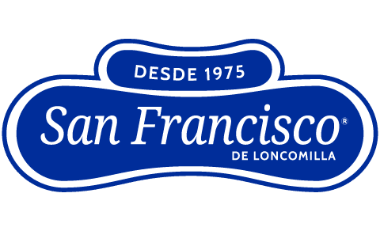
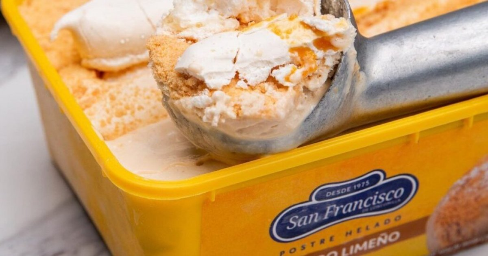
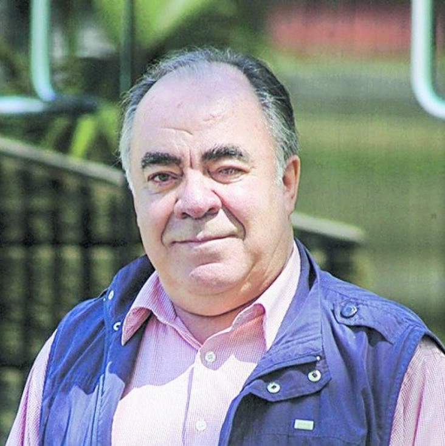

San Francisco

Novedades
Contacto
Contacto
Nuestro compromiso
Queremos que con cada helado San Francisco disfrutes de momentos felices compartiendo sabores memorables, elaborados de forma única; con la mejor calidad, tradición artesanal e ingredientes naturales

Una Empresa familiar
“Hace más de 37 años que junto a Marie-Anne iniciamos esta pequeña empresa de campo. Con el paso del tiempo se fueron sumando nuestros hijos. Hoy, junto a ellos, seguimos destinando nuestros mejores esfuerzos para entregar diariamente a ustedes productos únicos, naturales, de excelente sabor y la mejor calidad.”



Francisco Mac-Clure
Socio fundador de empresa Helados
San Francisco de Loncomilla
Nicolás Mac-clure
Gerente de Desarrollo en empresa
Helados San Francisco de Loncomilla
Marie-Anne Lyon
Socia fundadora de empresa Helados
San Francisco de Loncomilla